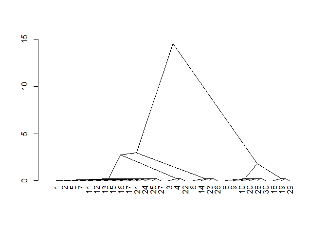
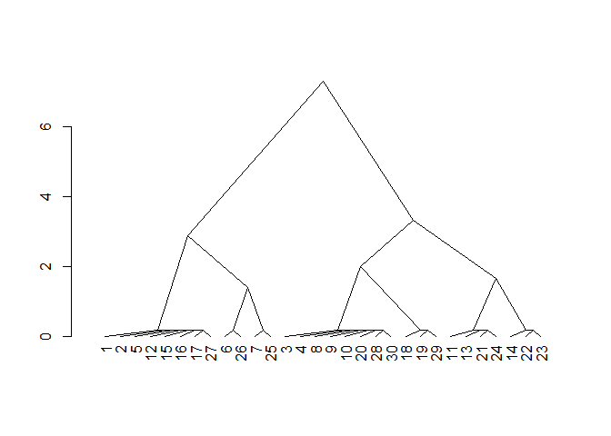

The goal of {SOILmilaR} is to provide methods for applying standardized, customizable “similar soils” rules to site-level data derived from various sources.
The main method in this package to implement this method is similar_soils(). It follows the process outlined in Norfleet & Eppinette (1993):
Norfleet, M.L. and Eppinette, R.T. (1993), A Mathematical Model for Determining Similar and Contrasting Inclusions for Map Unit Descriptons. Soil Survey Horizons, 34: 4-5. https://doi.org/10.2136/sh1993.1.0004
Installation
You can install the development version of SOILmilaR from GitHub with:
# install.packages("remotes")
remotes::install_github("brownag/SOILmilaR")Example
This is a basic example which shows you how to solve a common problem:
library(SOILmilaR)
set.seed(456)
x <- do.call('rbind', lapply(1:3, \(i) data.frame(id = paste0(LETTERS[1:10], i),
taxpartsize = c("fine-loamy", "loamy", "fine-loamy", "fine-loamy",
"coarse-loamy", "coarse-loamy", "coarse-loamy", "loamy-skeletal",
"loamy-skeletal", "loamy-skeletal"),
depth = runif(10, 35, 150),
pscs_clay = c(runif(4, 18, 35), runif(6, 14, 18)),
pscs_frags = c(runif(3, 0, 15), runif(4, 10, 34),
runif(3, 35, 60) + c(0, 40, 0)))))
rate_taxpartsize <- function(x) {
# TODO: this is just made up logic for this example and needs to be updated
dplyr::case_match(x,
c("sandy-skeletal") ~ 1,
c("sandy") ~ 2,
c("loamy", "coarse-loamy", "coarse-silty") ~ 3,
c("fine-loamy", "fine-silty") ~ 4,
c("clayey", "fine") ~ 5,
c("very-fine") ~ 6,
c("loamy-skeletal", "clayey-skeletal") ~ 7)
}
rate_depthclass <- function(x,
breaks = c(
`very shallow` = 25,
`shallow` = 50,
`moderately deep` = 100,
`deep` = 150,
`very deep` = 1e4
),
...) {
res <- cut(x, c(0, breaks))
factor(res, levels = levels(res), labels = names(breaks), ordered = TRUE)
}
rate_pscs_clay <- function(x, breaks = c(18, 27, 40, 60, 100)) {
res <- cut(x, c(0, breaks))
factor(res, levels = levels(res), ordered = TRUE)
}
m <- list(taxpartsize = rate_taxpartsize,
depth = rate_depthclass,
pscs_clay = rate_pscs_clay)
s <- similar_soils(x, m)
#> comparing to dominant reference condition (`7.3.1` on 6 rows)
head(s)
#> id taxpartsize depth pscs_clay similar_dist similar
#> 1 A1 4 2 2 5 FALSE
#> 2 B1 3 3 2 5 FALSE
#> 3 C1 4 4 3 6 FALSE
#> 4 D1 4 4 3 6 FALSE
#> 5 E1 3 4 1 5 FALSE
#> 6 F1 3 3 1 4 FALSE
# inspect distances using agglomerative clustering+dendrogram
d <- cluster::agnes(s[, 5, drop = FALSE], method = "gaverage")
d$height <- d$height + 0.2 # fudge factor for 0-distance
plot(stats::as.dendrogram(d), center = TRUE, type = "triangle")
# allow relative contrast ratings to be negative
# (i.e. ordinal factors, concept of "limiting")
# absolute value is still used for "similar" threshold
s2 <- similar_soils(x, m, absolute = FALSE)
#> comparing to dominant reference condition (`7.3.1` on 6 rows)
# inspect distances unsing agglomerative clustering+dendrogram
d2 <- cluster::agnes(s2[, 5, drop = FALSE], method = "gaverage")
d2$height <- d2$height + 0.2 # fudge factor for 0-distance
plot(stats::as.dendrogram(d2), center = TRUE, type = "triangle")